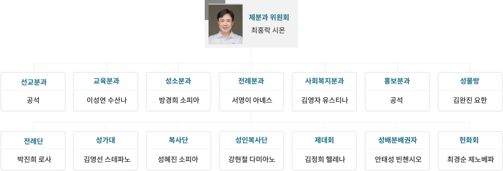

제분과 위원회는
주임신부님의 사목 방침에 따라 본당의 복음화 활동을 계획하고 추진하는 위원회

| 단체명 | 소개 및 활동 내용 | 가입 조건 |
|---|---|---|
| 선교분과 | 본당의 모든 신자뿐 아니라 소공동체와 각 단체들 그리고 본당 공동체가 선교를 생활화 할 수 있도록 계획, 조직, 교육, 운영, 평가를 수행하며 세례를 받기전까지의 예비신자의 모든 활동을 관리합니다. 냉담자 관리도 계획중입니다. | 세례 받으신 본당 신자면 누구나 환영 |
| 교육분과 | 신자들의 지적, 영적 성숙평신도 지도자의 발굴 육성을 위한 각종 교육 및 연수 피정을 계획하고 실시 평가하는 일을 수행 합니다. | |
| 전례분과 | 미사성제 및 교회의 모든 전례 예식, 신자들의 기도 생활과 관련된 업무를 계획하며 수행 합니다. 그러므로 전례분과 소속 단체들이 많으며 본당의 경우 7개 (전례단, 성가대, 제대회, 헌화회, 성인 복사단, 복사 자모회, 성체 분배단)단체가 현재 활동중에 있습니다. | |
| 사회복지분과 | 교회와 지역사회 복지(특히 어려운 이웃에 대한 지원)를 담당합니다. | |
| 성소분과 | 교회 발전을 위한 성소 개발과 성소 후원 관련 활동을 수행합니다. 여기서 성소라 함은 하느님의 거룩한 부르심을 의미합니다. 하느님의 부르심에 기꺼이 응답하여 하느님의 마음을 얻고 그 길을 따르는 것은 성소의 길을 걷는다 할 수 있있습니다. 예비 신학생의 발굴과 후원및 성소 후원의 제반 계획 및 추진등이 있습니다. | |
| 홍보분과 | 본당의 역사 자료 수집과 정리를 담당하고 대내외적으로 교회 홍보와 미관관리, 교회 내의 각종 행사나 활동 등의 자료작성과 관리를 담당합니다. 본당의 전반적인 홍보에 관련된 사항을 책임지며 각종 본당 행사 사진 및 동영상 촬영을 통한 기록 관리 등을 담당하고 있습니다. |